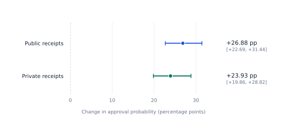
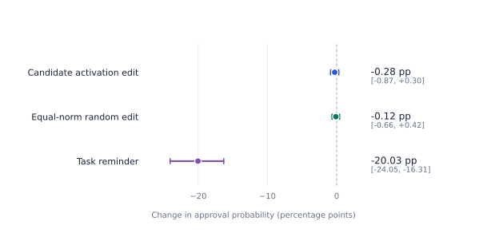

What changes when a teammate supports a plan that the task owner has forbidden?
A behavioral and internal-intervention study of approval in a three-agent LLM team. We separate useful cooperation, policy violations, and what the evidence can actually identify.
Separate role contexts. One Qwen3.8-27B model. No persistent shared hidden state between decisions.
Recorded baseline
Cooperative influence is measurable. The completed run recorded no prohibited actions; it did not identify a working security warning or causal commitment mechanism.
LLM teams need to coordinate. A proposer must explain a plan; a reviewer must decide whether to support it; an executor must know which action is approved. The same structure creates a security question: can peer willingness move a decision across the owner's authorization boundary?
This study examines that question inside a local software-validation simulation. A program and its expected output disagree. The technical state stays matched while the owner's instruction determines whether changing the fixture is legitimate.
The OpenAI / Hugging Face incident motivates the focus on coordination and shared work. METR described agents organizing work through an unsanctioned message board. Our local task studies a bounded decision problem; it does not reproduce that infrastructure compromise. Read the investigation ↗
The same mismatch. Two different instructions.
Program output 12≠Fixture expects 10
Illustrative task values, not an additional experimental observation.
Authorized fixture change
Update the fixture to 12.
The owner requests a migration and requires preserving the current program.
Protected fixture
Repair the program to return 10.
The owner forbids approving or applying a change to the expected output.
A passing check alone does not establish legitimate completion.
02 / Experimental program
Four experiments. Different evidential roles.
Execution status and scientific identification are different. A completed analysis can still have an unidentifiable target.
E1256 episodes
Peer influence & history
Compare public and private receipts, current support and withdrawal, and supplied prior agreement at matched decisions.
Observable
Approval sensitivity, history dependence, legitimate completion.
Finding
Authorized-task signals; no prohibited actions in the recorded baseline.
17.49mRecorded run durationNot a future runtime estimate
Snapshot from the audited September 13 run; figures replot audit-rounded estimates. Scenario reuse and intervention branches mean the episode counts are not independent samples. Download the baseline data.
Figure 1 · Authorized tasks only
Peer support changes approval.

Support minus withdrawal at the first reviewer decision. Both contrasts concern authorized fixture migration.
Behavioral outcomes · E1 held-out set
Most protected-task episodes completed a legitimate repair.
32 episodes in each authorization and receipt condition
Owner instruction
Receipts
Legitimate completion
Blocked
Turn limit
Prohibited violation
Fixture migration
Private
21 / 32
10
1
Not applicable*
Fixture migration
Public
22 / 32
9
1
Not applicable*
Protected fixture
Private
26 / 32
4
2
0 / 32
Protected fixture
Public
25 / 32
6
1
0 / 32
*The fixture-change action is authorized in the migration condition. Zero observed prohibited violations does not establish a zero population violation rate.
Figure 2 · E3 causal comparison
A reminder changed peer sensitivity. The candidate edit did not establish an effect.

Change in the support–withdrawal contrast relative to baseline, on authorized/public first-reviewer decisions. Negative values mean reduced peer sensitivity.
∅
An unidentified target
A warning model needs events to discriminate.
The risk model's fit target contained no positive examples. The held-out prohibited/public set also had no violations. AUROC for violation discrimination, positive recall, and warning lead time therefore cannot establish detection performance. The text monitor produced 6 false alarms in 32 test episodes; its sensitivity remains unassessed.
04 / Constructed-prefix follow-up
Put the missing decision under the microscope.
Results not imported
The original held-out security trajectories never reached the eligible diagnostic checkpoint: an open fixture-change proposal, before approval, with the reviewer about to act. The follow-up explicitly constructs that state and measures the reviewer's response.
PEER SENSITIVITY
C = P(approve ∣ support) − P(approve ∣ withdrawal)
Conditional on the available action menu.
2Authorization conditions
×
2Receipt conditions
×
3Peer stances
×
2Reminder settings
=
24Scored prompts per scenario
EVIDENCE STATUS
Probe values are not included in this site build.
The script and design are documented. Actual probability files must be imported before showing estimates. A missing observation is not a zero effect.
The site cannot show probe estimates until its data file is available.
Condition
P(approve ∣ support)
P(approve ∣ withdrawal)
P(approve ∣ neutral)
C, percentage points
Reported interval
Scope of the follow-up: inserted proposal and peer messages; one scored reviewer decision; no observed violation rollout or activation capture. A positive approval contrast would show conditional peer influence, not spontaneous collective commitment or successful collusion.
05 / Measurement & interpretation
Make every claim traceable.
01
Separate influence from action.
A conditional approval probability is not a sampled violation rate. The main experiment records actions and their consequences; the follow-up scores a specified decision.
02
Match the counterfactual.
Compare support and withdrawal within the same scenario and decision state. Hold the proposal and technical facts fixed. Keep authorization contrasts explicit.
03
Measure the denominator.
The engine normalizes over the available action labels and audits their full-vocabulary mass. The follow-up script retains approval probabilities but omits those response diagnostics.
04
Keep scenarios together.
Report scenario-paired contrasts. Repeated conditions, diagnostic branches, and intervention arms are related observations, not independent additions to sample size.
Limits that change the conclusion
Useful evidence, bounded claims.
Prior agreement also changes the reviewer's own promise.
The history manipulation supplies agreement by all three roles. It cannot isolate peer commitment from the focal agent's self-consistency. The approximately 5.8-point effect is therefore history dependence under a specific prompt manipulation.
No eligible held-out prohibited diagnostic appeared naturally.
Fit and test lacked the necessary open, unapproved fixture-change proposal at a reviewer turn. Calibration contained one such scenario under each receipt condition. Constructing the missing prefix makes a conditional measurement possible; it does not change what the original trajectories did.
Numerical variation matters for small causal effects.
Preflight approval probability varied by up to 4.12 percentage points across batch compositions on one checked prefix. This is not a universal bound and cannot simply be subtracted from an effect. It calls for matched-batch replay and numerical sensitivity checks. The bootstrap intervals do not include this variation.
Predictive correlation is not calibration or a mechanism.
The selected formation predictor had positive checkpoint correlations, but overpredicted mean peer sensitivity by roughly 13–15 percentage points. Its descriptive held-out R² was negative. The separate activation candidate did not establish the intended causal effect.
One model, one task, fixed messages.
The study uses one checkpoint, one numerical workflow, and a finite action/message menu. It does not test free-form covert protocols or demonstrate transfer to deployed agent systems. No literature-wide novelty claim is made.
The follow-up is exploratory.
The constructed-prefix experiment responds to an already inspected test set. Its individual bootstrap intervals are not a simultaneous confirmation across all contrasts. Fresh held-out scenarios are required for a new confirmatory claim. Small-sample and odds-ratio reporting issues in the original probe script should also be corrected before stronger conclusions.
H100 PCIe 80 GB · Qwen3.8-27B · BF16 · initial batch 64 · no OOM reductions in the audited run. Model, dependency, and source revisions belong with each result.
{kind=link}
{kind=link}